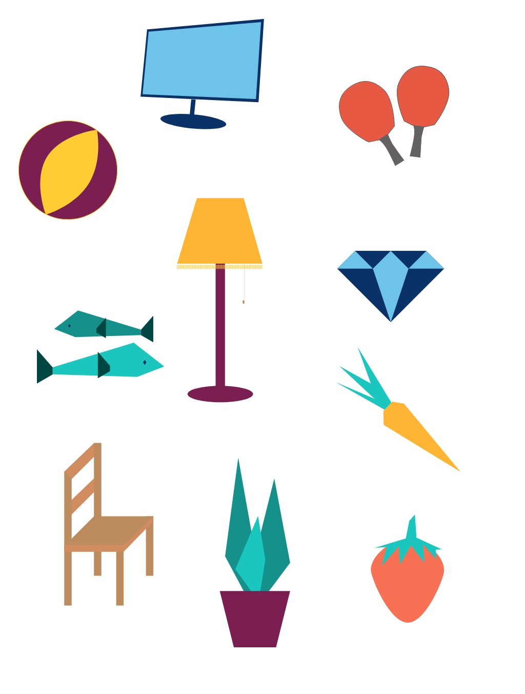
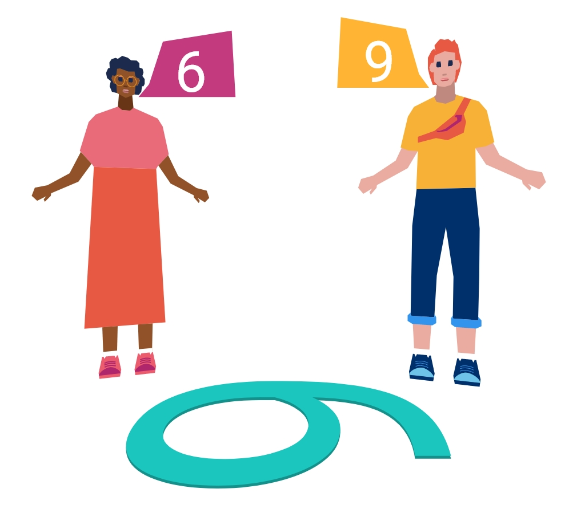
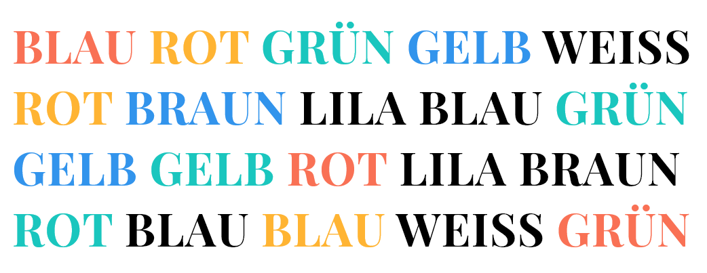
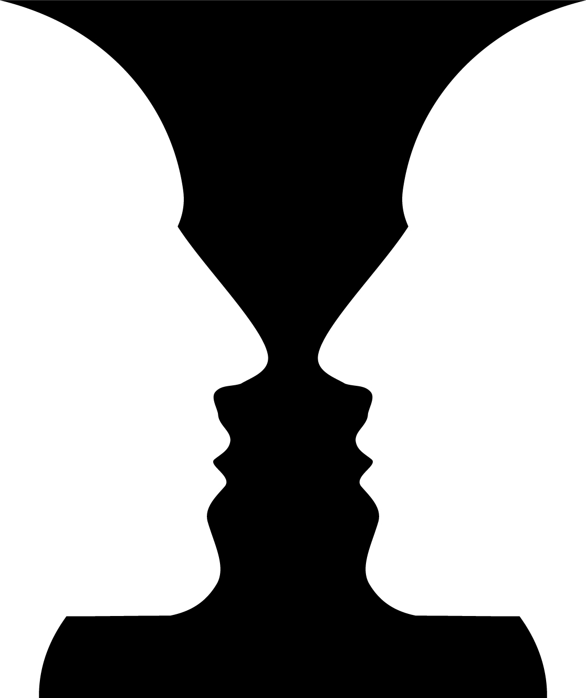

الإدراك والحقيقة
سلام. لقد أحضرت لك فيديو وتمرين. أنا ليس لدي خبرة جيدة في العد. هل يمكنك العد لي؟ أحتاج إلى معرفة كم مرة سوف تسقط الكرات على الأرض في المنطقة الملونة؟
سلام. لقد أحضرت لك فيديو وتمرين. أنا ليس لدي خبرة جيدة في العد. هل يمكنك العد لي؟ أحتاج إلى معرفة كم مرة سوف تسقط الكرات على الأرض في المنطقة الملونة؟
شاهد الفيديو الآتي:
ممتاز! شكرا لك لحساب ذلك لي. دائماً ما أجد صعوبة في التركيز على الكرات عندما يتغير الشكل على الأرض والألوان. هل لاحظت ذلك أيضاً؟
من المحتمل أنك لم تلاحظ هذه التغييرات. الآن يمكنك الانتباه مرة أخرى:
غريب! لقد لاحظت هذا فوراً على عكس جميع أصدقائي..
ليس الأمر بهذه الغرابة. وهذه الظاهرة لها اسم بالفعل: الإدراك الانتقائي. الانتقائية تعني أنّنا نقوم بالاختيار.
عالمنا صخب جداً ومليء بالألوان. تأتينا كثير من الانطباعات في كل وقت. ألف لون، ألف رائحة، ألف صوت. لا يمكننا أن ندرك كل هذه الأشياء في آن واحد ولا يستطيع عقلنا أن يستوعب كل شيء.
نعم، صحيح. لقد حاولت بالفعل أن أدرك كل شيء وأُصبت في النهاية بصداع. في كل لحظة في حياتنا هناك الكثير من الأشياء التي نشعر بها ونشمها ونتذوقها ونسمعها ونراها. وبعدها يجب على عقلنا أن يصلها ببعضها. على سبيل المثال ما نرى وما نتذوق. بالتأكيد يمكن لهذا أن يكون محيراً.
عقلنا مثل الحاسوب الخارق ومع ذلك فإن له حدوده. لا يجب أن نُحمّل نفسنا أكثر من وسعنا لذلك علينا أن نُصفّي عقلنا. وهذا يحدث بشكل لا شعوري ـ ولا نلاحظه على الإطلاق. سننظر فيما يلي إلى كيفية تصفيتنا لما حولنا وعن السبب حول ادراكنا لبعض الأشياء وعدم ادراكنا للبعض الآخر. نحن نصفي عقلنا عن طريق المهام. إذا كانت مهمتنا هي: حساب عدد المرات التي سقطت فيها الكرات على الأرض في المنطقة المحددة، فإننا نُركّز على ذلك. وبهذا لم نعد نلاحظ الكثير من الأشياء الأخرى التي تحدث.
عندما نضع تركيزنا في أمر معين، نغفل عن باقي الأمور. إنه أشبه بالنظر في نفق. ولهذا السبب فإن الجوال وحركة المرور على سبيل المثال ليسا مزيجاً جيداً. تركيزنا عادةً يكفي لشيء واحد فقط.
انظر! هناك الكثير من الأحداث في هذه الصورة الآتية. كلانا عندنا من الوقت خمس ثواني لنحفظ أكثر عدد ممكن من الأشياء في الصورة. جاهز؟ ابدأ!
حاول حفظ أكبر عدد ممكن من العناصر.

مذهل! لقد استطعت تذكر أشياء أكثر مني.
في الواقع، هناك احتمال كبير جداً أن يتذكر كلٌّ منّا أشياء مختلفة عن الآخر. استيعابنا للأمور بشكل أسرع أو أسهل يعتمد على ما نحب أوما لا نحب. وبناءً على ما لدينا من تجارب نستوعب الأمور بشكل أسرع وأسهل.
ماذا ترى في المنتصف؟
في الواقع كلاهما صحيح. إذا كانت الإجابة 13 أو B، فهذا يعتمد على السياق. هذا بالطبع مثال غير ملموس. ولكن هذا الأمر يحدث بنفس الطريقة في الحياة.
شعورنا الحالي أو المزاج الذي يسيطر علينا يُمكن أن يكون هو السياق المقصود. يمكننا أن نُدرك نفس الجملة بشكل مختلف.
في الواقع كلاهما نفس الحجم. ولكن الدوائر الحمراء مختلفة الحجم وموضوعة بشكل مختلف. الشخص يُقارن الدوائر الزرقاء بالدوائر الحمراء. فالسياق غالباً ما يكون مقارنة.
أيوا، تماما! أنا أعرف هكذا شيء! في فصل الشتاء، 18 درجة هي أفضل طقس للشواء. في الصيف عندما تبلغ الحرارة 18 درجة أقوم بإعداد كوب شاي لنفسي. كل شيء نسبي!
نسبي يعني أنه متعلق بأمر ما. الإدراك متعلق بما يحيطنا، بما نشعر به، ما نراه، وبما نقارن شيء ما به.
علاوة على ذلك فإن وجهات النظر لها دور كبير في كيفية استيعابنا للأمور. وجهة النظر تعني المكان التي ننظر منه إلي شيء ما. يمكن للشجرة أن تكون كبيرة جداً إن كنّا نقف أمامها. كل شيء يبدو صغيراً جداً من الطائرة. فضلاً على ذلك فالاتجاه الذي ننظر منه أمر حاسم:

حتى في هذه الصورة لا توجد إجابة صحيحة وإجابة خاطئة. إنه رقم ستة. إنه رقم تسعة. الأمر متعلق بالمكان الذي ننظر منه إلى الرقم. كلاهما على حق. ورغم ذلك يتشاجران ـ فقط لأن لديهم وجهة نظر مختلفة في الرقم.
خبراتنا ومشاعرنا وفي بعض الأحيان سياقنا في الحديث أمر شخصي جداً. ولكن هناك شيء آخر نتشارك جميعنا فيه. أحياناً تلعب أدمغتنا حيل علينا. نحن لا نستطيع أن نستوعب بعض الأمور كما هي. لأن عقلنا لا يستطيع فعل ذلك.
أنا أُحب هذا الشيء! ممتاز! خدع بصرية! أنا لم أكن أُدرك أنّ العارضة لونها رمادي. عقلي ايضاً لا يستطيع تطبيق هذا. لا يمكننا رؤية أنّ العارضة رمادية حتى نحرك المنزلق في الخلفية.
اذكر الألوان التي تراها وليس أسماء الألوان المكتوبة أمامك. يعني: أحمر، أصفر، أخضر....

أشعر بالصُداع الآن.
غالباً ما كان الأمر صعباً عليك وكنت بطيئاً مثل معظم الناس. لقد تعلمنا أنّ عقلنا يقوم بتصفية ما حولنا، لأنه بدون هذه العملية سيرهق عقلنا. هذه واحدة من تلك اللحظات. يحدث شيئان في وقت واحد في عقلنا: نقرأ الكلمات ونرى الألوان. لا يستطيع عقلنا استيعاب كل هذا. يصبح العبء ثقيلاً عليه ونصبح مُرتَبِكين.
إن استيعاب معنى الادراك يبدو معقداً بعض الشيء. الطريقة التي يعمل فيها عقلُنا ووجهات نظرنا والسياق وخبراتنا وتفضيلاتنا... كل هذا يؤثر على ادراكنا. ولكن الأمر لم ينتهي هنا بعد.
لُغتنا الأم يمكنها بالفعل أن تؤثر على طريقة ادراكنا للعالم الذي حولنا.
إنك تتعلم حالياً لغة جديدة أيضاً. الألمانية. ربما لاحظت من قبل أن هناك كلمات أو أفكار بلغتك الأم لا تستطيع ترجمتها إلى اللغة الألمانية. وبالعكس هناك كلمة أو فكرة ألمانية لا نستطيع ترجمتها الى لغتك الأم.
الأمر كالآتي: العلماء لم يتوصلوا بعد لكيفية تأثير اللغة على ادراكنا. ولكننا نعلم أنه يحدث بالفعل.
اعتماداً على اللغة التي يتحدث بها الشخص، يتصرف المرء أحياناً بشكل مختلف ويُدرك بيئته بشكل آخر. وهناك عدة دراسات علمية عن هذا الموضوع. لُغتَنا تُشكّل عالمنا. نحن نُدرك ونَستوعب العالم ونُعبر عن الأمور المختلفة على حسب اللغة التي ننطقها.
أشعر أنني مرح أكثر عندما أتحدث بلغتي الأم. عندما أتحدث الألمانية أشعر بأنني مُمل.
وهذا بالفعل شعور الكثير من الناس الذين يتحدثون عدة لغات. هناك دراسات تقول إن الأفعال تتغير حسب اللغة التي نتواصل بها في الوقت الحالي. كأننا تقريبًا نملك شخصية مختلفة لكل لغة.
أنا أرى شيئًا أنت لا تراه... علينا أن نتوقف قبل أن ينفجر رأسي. كان هذا كثيراً لليوم! ولكن عندي سؤال أخير: ما هو الواقع في الإدراك؟
هذا سؤال جيد. فعليّاً، كلمة الإدراك في الأصل لا علاقة لها بالواقع. لكن هذا موضوع آخر. بالنسبة لنا، الإدراك هو الواقع. إنه العالم الذي نراه. كلٌّ منا يرى العالم بشكل مختلف.
اذاً عالمي ليس عالمك. وعالم حمودي ليس نفسه عالم باول. بالطبع هناك حقائق. هناك علوم الطبيعة. هناك قوانين فيزيائية. لكن الطريقة التي نرى بها العالم، والتي نعتقد أنها حقيقيه ـ هي أمر مُتَفرّد جداً، وبذلك تختلف من شخص لآخر.
مزهرية أم وجهان. بغض النظر عمّا تراه أولاً، فهو صحيح. إذا لم ترى وجوهاً ولا مزهرية، فهذا أيضاً صحيح. واقِعنا كما نُدرِكُه.

لقد تم الجدال في هذا الأمر على شبكة الانترنت لمدة صيف كامل. الفكرة هي أن عقلنا يقرر بشكل عشوائي إن كانت صورة الفستان أُخِذَت في الضوء أم في الظلّ. عندما يقرر العقل أن نُصدق نسخة ما، يصعُب علينا بعدها رؤية اللون الآخر.
أه... بالمناسبة الفستان أزرق وأسود.
هكذا يرى الطاووس طاووس آخر.
هكذا يرى الجمبري قاع البحر.
هكذا يرى الأرنب أرنب آخر.
لذلك فإن التحدث مع بعضِنا البعض مهم جداً لأننا نرى الأمور بشكل مختلف. لا أعلم كيف يبدو العالم من خلال عينيك. وأنت لا تعلم كيف يبدو العالم من خلال عيني. لهذا السبب علينا التواصل. رائع، لقد أكملت التمرين بنجاح، استمر في ذلك!